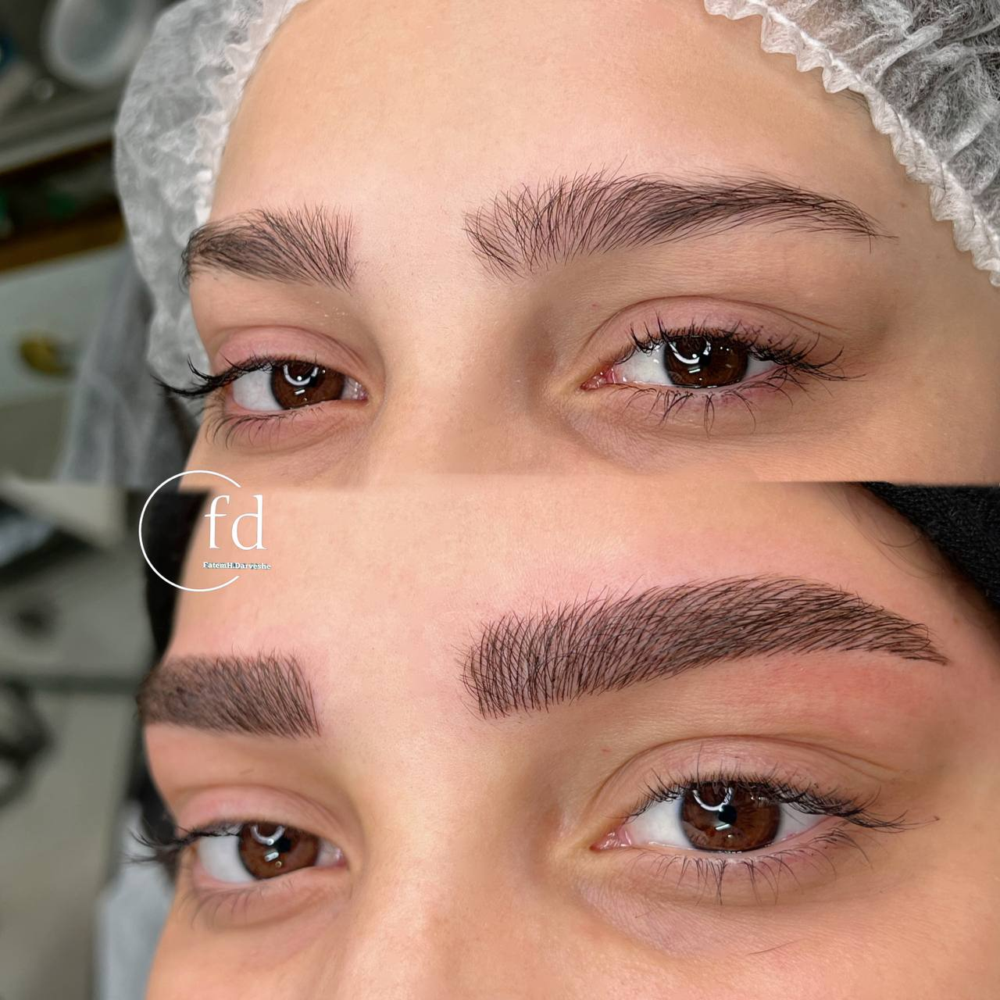

چطور بهترین مرکز میکروبلیدینگ در مشهد را انتخاب کنیم؟ (۵ نکته کلیدی)
نوشته شده در تاریخ ۳۰ تیر ۱۴۰۴ - توسط: م. اشرفی
انتخاب یک مرکز میکروبلیدینگ و یک پیگمنتر حرفهای در مشهد، مهمترین تصمیمی است که بر نتیجه نهایی زیبایی ابروهای شما تاثیر میگذارد. یک انتخاب اشتباه میتواند منجر به نتیجهای غیرطبیعی و حتی آسیب به پوست شود. اما با وجود گزینههای متعدد، چگونه میتوان **بهترین مرکز میکروبلیدینگ در مشهد** را پیدا کرد؟ در این راهنما، ۵ نکته کلیدی و کاربردی را به شما آموزش میدهیم تا با اطمینان کامل، بهترین انتخاب را داشته باشید.
۱. نمونه کارها را با دقت یک کارآگاه بررسی کنید!
نمونه کار، شناسنامه یک پیگمنتر است. به جای دیدن عکسهای کلی، روی جزئیات تمرکز کنید:
- طبیعی بودن خطوط: آیا خطوط ایجاد شده به ظرافت تار موی واقعی هستند یا شبیه به ماژیک به نظر میرسند؟
- قرینگی و طراحی: آیا طراحی ابرو با فرم کلی چهره مشتری هماهنگ است؟ آیا هر دو ابرو کاملاً قرینه هستند؟
- عکسهای قبل و بعد واقعی: به دنبال عکسهای بدون ادیت و از زوایای مختلف باشید. بهترین مراکز، ویدئوهای کوتاهی از کار خود نیز به اشتراک میگذارند.
تعهد ما: در مرکز زیبایی فاطمه درویشی، ما به نمایش نمونه کارهای واقعی و بدون فیلتر افتخار میکنیم. شما میتوانید در صفحه نمونه کارهای ما، ظرافت و طبیعی بودن خطوط را در چهرههای مختلف مشاهده کنید.
۲. بهداشت و استریل بودن، خط قرمز شماست
میکروبلیدینگ با سلامت پوست شما سر و کار دارد. یک مرکز حرفهای باید به طور وسواسگونهای بهداشت را رعایت کند. مطمئن شوید که:
- از سوزن و کارتریجهای **یکبار مصرف** و استریل استفاده میشود که در مقابل چشمان شما باز میشوند.
- پیگمنتر از دستکش و ماسک استفاده میکند.
- محیط کلی سالن تمیز، آرام و حرفهای است.
۳. تخصص و تجربه پیگمنتر
یک پیگمنتر خوب، فقط یک تکنسین نیست، بلکه یک هنرمند است. او باید علاوه بر تکنیک، با اصول چهرهشناسی و طراحی آشنا باشد. داشتن گواهینامههای معتبر یک مزیت است، اما تجربه و سابقه کاری موفق، مهمترین فاکتور است.
تخصص ما: فاطمه درویشی با سالها تجربه تخصصی و گذراندن دورههای پیشرفته، متعهد به ارائه خدماتی است که هنر و تکنیک را با هم ترکیب میکند. برای آشنایی بیشتر، صفحه درباره من را مطالعه کنید.
۴. کیفیت مواد مصرفی (رنگدانهها)
ماندگاری و زیبایی رنگ ابروی شما، مستقیماً به کیفیت رنگدانههای مورد استفاده بستگی دارد. بهترین مراکز از رنگهای **ارگانیک و معتبر** با پایه گیاهی استفاده میکنند که کمترین حساسیت را ایجاد کرده و به مرور زمان به رنگهای ناخوشایند (مانند قرمز یا دودی) تغییر پیدا نمیکنند.
۵. جلسه مشاوره، کلید اطمینان شما
یک مرکز حرفهای هرگز قبل از یک جلسه مشاوره دقیق، کار را شروع نمیکند. در این جلسه، پیگمنتر باید:
- به تمام سوالات و نگرانیهای شما با حوصله پاسخ دهد.
- نوع پوست شما را بررسی کند.
- طراحی اولیه را با مداد روی صورت شما انجام دهد تا شما نتیجه نهایی را ببینید و تایید کنید.
اگر مرکزی برای مشاوره وقت نمیگذارد یا به سوالات شما پاسخ شفافی نمیدهد، آن را از لیست خود حذف کنید.